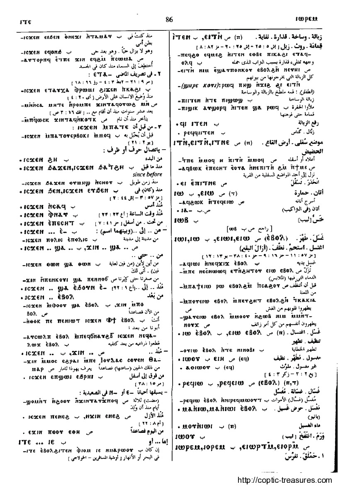

ⲓⲧⲉⲛ (ⲡ)
(
noun male
)
Crum:
87b
ground, earth, dust, rubbish
[
γη
,
κοπροσ
,
χουσ
]
ground as bottom, lower part
212-1-1
212-2-1
212-2-2
(S) ⲉⲓⲧⲛ, ⲓⲧⲛⲉ
(S) ⲧⲛⲏ
(S, sA) ⲓⲧⲛ
(S, B, F) ⲓⲧⲉⲛ
(S) ⲉⲡⲓⲧⲛ (noun)
(noun)
as nn
Crum:
88a
87
88
Dawoud:
86b,86b

86
Key:
212
Home
,
Contact